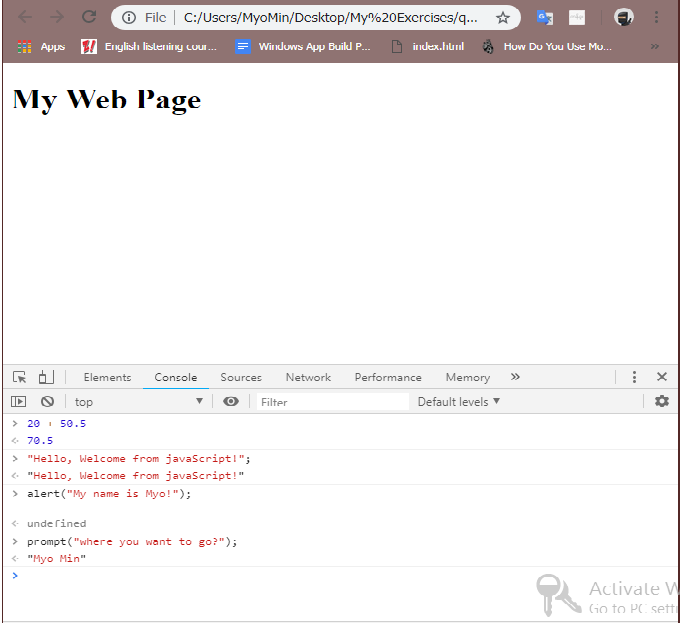
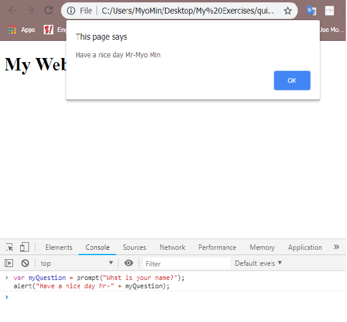

What You'll Learn
Introductin JavaScript
JavaScript တွေကကမ္ဘာကြီးမှာ popular အဖြစ်ဆုံးနှင့် versatile ဖြစ်တဲ့ programming language တစ်ခုဖြစ်ပါတယ်။အဲ့တာတွေကစတင်ပြီးအလုပ်လုပ်တဲ့နေရာမှာလျှင်မြန်ပြီးလွယ်ကူပါတယ်။ဘာ့ကြောင့်လဲဆိုတော့အဲ့တာတွေက browser ထဲမှာမှန်ကန်အောင်တည်ဆောက်ပေးပါတယ်။ကျွန်တော်တို့က JavaScript ကိုအခြား language ကနေကူးပြောင်းတဲ့အခါမှာ javaScript တွေကအခြား concepts တွေအများအပြားနဲ့ အခြား programming languages တွေရဲ့ capabilities တွေကိုပြန်ပြီးမျှဝေပေးနိုင်ပါတယ်။ JavaScript ကဘာလို့ beginner friendly ဖြစ်တာလဲဆိုတဲ့အကြောင်းပြချက် 4 ခုရှိပါတယ်။ပထမတစ်ချက်ကတော့ browser ထဲမှာတည်ဆောက်နိုင်တာဖြစ်ပါတယ်။ဒုတိယတစ်ချက်ကတော့ JavaScript တွေကရိုးရှင်းတဲ့ syntax တွေဖြစ်ပါတယ်။တတိယအချက်ကတော့ community တွေကိုကြီးမားပြီးတက်ကြွစွာထောက်ပံ့ပေးပါတယ်။နောက်ဆုံးတစ်ချက်ကတော့ ကျွန်တော်တို့ရဲ့အလုပ်တွေကိုပိုပြီးလွယ်ကူဖို့ရန်အတွက် tool တွေအများအပြားကိုအသုံးပြုကြပါတယ်။အခုနောက်ပိုင်းမှာ JavaScript ကိုပိုပြီးအသုံးပြုလာကြပြီးdeveloper တွေအတွက်အခြား programming language တွေထက်မြန်အောင်ပြုလုပ်နိုင်ပါတယ်။
Start With Console Code
နောက်ထပ်ကျွန်တော်တို့ javaScript development တွေကိုစတင်ဖို့အတွက် common data types, variables, arrays, objects, loops, functions တွေစတာတွေကိုသိထားဖို့လိုအပ်ပါတယ်။ကျွန်တော်တို့ javaScript တွေကိုစတင်ပြီးလေ့လာရင်းရေးဖို့အတွက်အကောင်းဆုံးနေရာကတော့ web browser
ပေါ်မှာပဲဖြစ်ပါတယ်။တကယ်တော့ javaScript က browser ရဲ့အတွင်းပိုင်းမှာ 1995 ကတည်းကစတင်ပြီးရရှိခဲ့တာဖြစ်ပါတယ်။Browser တွေမှာ javaScript interpreter တွေက Built-in ပါဝင်ပြီး reads လုပ်ဖို့ understands ဖြစ်ဖို့နဲ့ javaScript program ထဲမှာ
instruction တွေကို run နိုင်ဖို့အတွက်ပဲဖြစ်ပါတယ်။ JavaScript instruction တွေကိုစပြီ်းရေးဖို့အတွက် browser ထဲမှာကျွန်တော်တို့က developer tools ကနေ console tag ကိုဖွင့်ဖို့လိုအပ်ပါတယ်။ console tag ထဲမှာတော့ကျွန်တော်တို့ javaScript code
တွေကိုရေးပြီး run နိုင်ပါတယ်။JavaScript တွေကမတူညီတဲ့ data types တွေရဲ့ number တွေကိုထောက်ပံ့ပေးနိုင်ပါတယ်။ ကျွန်တော်တို့ ဥပမာထဲမှာပြထားသလိုပဲ javaScript တွေကို calculation တွေကိုလည်းပြုလုပ်နိုင်ပါတယ်။mathematical calculation တွေဖြစ်တဲ့
addition တွေ subtraction တွေ multiplication တွေ division စတာတွေပဲဖြစ်ပါတယ်။နောက်ထပ်အသုံးပြုကြတဲ့ data type တွေကတော့ string ပဲဖြစ်ပါတယ်။ String တွေက words တွေ sentences တွေ ကျွန်တော်တို့ program ထဲမှာရှိတဲ့ text တွေပဲဖြစ်ပါတယ်။string
အဖြစ်သတ်မှတ်ချင်တယ်ဆိုရင်တော့ ကျွန်တော်တို့သတ်မှတ်ချင်တာတွေကိုဘယ်အရာမဆို single quote သို့မဟုတ် double quote ထဲမှာထည့်ပေးရမှာပဲဖြစ်ပါတယ်။ကျွန်တော်တို့က dialog box ကိုဖော်ပြချင်တယ်ဆိုရင်တော့ JavaScript ထဲမှာ alert ဆိုတဲ့ function ကိုအသုံးပြုရပါတယ်။ကျွန်တော်တို့ဥပမာထဲမှာလို
alert အတွက် code ကိုရေးပြီးရင်တော့ enter နှိပ်ပြီး run နိုင်ပါတယ်။နောက်ထပ် prompt ဆိုတာကတော့ Question တွေမေးတာ နဲ့ user တွေဆီက response တွေကိုရယူတာပဲဖြစ်ပါတယ်။user တွေဆီကယူလိုက်ပြီးကျွန်တော်တို့က alert box နဲ့ပြန်ပြီးထုပ်ပေးလို့ရပါတယ်။ဥပမာထဲကအတိုင်းလိုက်ပြီးရေးကြည့်နိုင်ပါတယ်။

Defining Variables & Display
ကျွန်တော်တို့ရဲ့ JavaScript program ထဲမှာ information တွေကိုခနထိမ်းသိန်းထားဖို့ရန်အတွက် variables တေါကိုသတ်မှတ်ပြီးသိမ်းထားပေးရပါတယ်။Variables တွေက JavaScript တွေမှာအရေးကြီးတဲ့ concepts တွေဖြစ်ပြီးရေဘူယကြတဲ့ programming ပဲဖြစ်ပါတယ်။ဥပမာထဲမှာတော့ကျွန်တော်တို့
prompt ကနေလက်ခံထားတဲ့ message တွေကိုယာယီသိမ်းထားပြီး alert နဲ့ပြန်ပြီးထုပ်ပြဖို့အတွက် variable ကိုသတ်မှတ်ပြီးထားခဲ့ပါတယ်။အဲ့တာကို assigning value လို့ခေါ်ပါတယ်။ နောက်တစ်ခုကကျွန်တော်တို့က console မှာ run တာကိုမပြုလုပ်သေးပဲအောက်တစ်ကြောင်းမှာထပ်ပြီး
code တွေရေးချင်တယ်ဆိုရင်တော့ shift+ enter ကိုနှိပ်ပေးရမှာပဲဖြစ်ပါတယ်။ကျွန်တောတို့ alert ထဲမှာ string တွေကို plug sign တွေအသုံးပြုပြီးပောင်းရေးထားတာကို concatenation လို့ခေါ်ပါတယ်။ javaScript မှာကြီးမားတဲ့ string တွေကိုပေါင်းဖို့အတွက်အဲ့ဒီနည်းလမ်းကိုအသုံးပြုပါတယ်။
ဒီနေ့ခေတ်မှာတော့ variables တွေကို let သို့မဟုတ် const ဆိုတဲ့ keywords တေါကိုအသုံးပြုပြီးသတ်မှတ်နေတာကိုလည်းကျွန်တော်တို့တွေမြင်နိုင်ပါတယ်။

JaVaScript Start In Project File
ကျွန်တော်တို့တွေ text editor ထဲမှာ project တွေရေးတဲ့အခါမှာ javaScript code တွေကို html file နဲ့ခွဲပြီးရေးထားပါတယ် CSS တွေရေးသလိုပါပဲ။ အဲ့တာကြောင့်ကျွန်တော်တို့က html document ထဲမှာ script tag ကိုထည့်ပြီး javaScript file ကိုခေါ်ပေးရမှာဖြစ်ပါတယ်။script tag တွေကိုကျွန်တော်တို့ကြိုက်တဲ့နေရာတိုင်းမှာလိုလိုထားနိုင်ပါတယ်။ဒါပေမယ့်များသောအားဖြင့် script tag တွေကို page ရဲ့ head ထဲမှာသို့မဟုတ် body tag ထဲမှာ body tag မပိတ်ခင်မှာထည့်ပြီးရေးကြပါတယ်။ကျွန်တော်တို့က script tag ကို page ရဲ့အောက်ခြေနားမှာထားပြီးရေးခဲ့ရင်တော့ browser က javaScript တွေကိုမ run ခင်မှာ HTML ကိုအရင်ဖော်ပြပေးမှာပဲဖြစ်ပါတယ်။ကျွန်တော်တို့တွေက javaScript တွေနဲ့နေ့စဉ်အလုပ်လုပ်နေတယ်ဆိုရင် javaScript ရဲ့ features တွေဖြစ်တဲ့ functions, loops, arrays တွေ objects တွေကိုပိုပြီးလေ့လာထားရမှာပဲဖြစ်ပါတယ်။ အဲ့တာကြောင့် JavaScript တွေဘယ်လိုအလုပ်လုပ်လဲဆိုတဲ့အရာတွေရဲ့အသက်ကတော့ functions တွေပဲဖြစ်ပါတယ်။ function ဆိုတာကတော့ code တွေရဲ့အစုအဝေးတွေဖြစ်ပြီးအဲ့တာတွေကိုပေါင်းပြီး function အဖြစ်အလုပ်လုပ်တာပဲဖြစ်ပါတယ်။ဥပမာကျွန်တော်တို့က prompt နဲ့ alert တွေကို javaScript function ထဲမှာတည်ဆောက်ခဲ့တယ်ဆိုရင်အဲ့တာတွေကိုကျွန်တော်တို့ရဲ့ program တွေထဲမှာထပ်ခါထပ်ခါပြန်ပြီးအသုံးပြုနိုင်ပါတယ်။javaScript တွေမှာကျွန်တော်တို့ရဲ့ကိုယ်ပိုင် function တွေကိုလည်းကျွန်တော်တို့ကိုယ်ပိုင်သတ်မှတ်နိုင်ပါတယ်။function တစ်ခုကိုဖန်တီးတော့မယ်ဆိုရင်ပထမကျွန်တော်တို့က function ဆိုတဲ့ keyword ကိုရေးပေးရပါမယ်။အဲ့ဒီနောက်မှာမှကျွန်တော်တို့ပေးချင်တဲ့ function အတွက် name ကိုပေးရမှာပဲဖြစ်ပါတယ်။ နောက်မှာ parentheses တစ်စုံရယ် curly braces တစ်စုံရယ်ထည့်ပြီးရေးပေးရမှာပဲဖြစ်ပါတယ်။javaScript တွေက curly braces ထဲမှာရေးနိုင်ပြီးတော့ function active ဖြစ်တဲ့အခါမှသာအဲ့တာတွေကအလုပ်လုပ်မှာဖြစ်ပါတယ်။curly braces ထဲမှာရှိတဲ့ instruction တွေအစုလိုက်တွေကကျွန်တော်တို့က function တွေကိုရည်ညွန်းပြီးအလုပ်လုပ်တဲ့အခါမှ run မှာဖြစ်ပါတယ်။ကျွန်တော်တို့ဥပမာထဲမှာတော့ function ထဲမှာ prompt နဲ့ alert တွေကိုထည့်ပြီးသုံးပြုထားတာပဲဖြစ်ပါတယ်။function ကိုခေါ်ပြီးသုံးလိုက်တဲ့အခါမှfunction ကအလုပ်လုပ်မှာဖြစ်ပါတယ်။
/** Html document **/
<!DOCTYPE html>
<html>
<head>
<title>My web Page</title>
</head>
<body>
<h1>My Web Page</h1>
<script src="main.js"></script>
</body>
</html>
/** JavaScript Codes **/
function sayHello() {
var response = prompt("What is your name?");
alert("Hello" + response + "!");
}
sayHello();
Passing with Parameters
အခုဆိုရင်ကျွန်တော်တို့က message တွေလိုမျိုး infromation တွေကို pass ပြုလုပ်ပြီးဖော်ပြတာတွေကိုလေ့လာပြီးဖြစ်ပါတယ်။နောက်ထပ်ကျွန်တော်တို့က function တွေအလုပ်လုပ်ပုံတွေကိုပြောင်းလဲဖို့အတွက် function ရဲ့ parentheses ထဲမှာ parameter ကိုထည့်ပေးရမှာဖြစ်ပါတယ်။အဲ့တာကြောင့်ကျွန်တော်တို့ဥပမာထဲမှာ paremeter ထဲမှာ greeting ဆိုတာကိုထည့်ပေးထားပါတယ်။အဲ့ဒီ paremeter ကိုကျွန်တော်တို့ကပြန်ပြီးဖော်ပြပေးမှာဖြစ်ပါတယ်။greeting ဆိုတဲ့ parameter က variable တစ်ခုလိုပဲအလုပ်လုပ်ပေးမှာဖြစ်ပါတယ်။ကျွန်တော်တို့က function ကိုပြန်ပြီးခေါ်သုံးတဲ့အချိန်မှာ parentheses ကြားထဲမှာ string တစ်ခုကိုထည့်ပြီးပြောင်းအသုံးပြုသွားမှာဖြစ်ပါတယ်။function ထဲကို information တွေဖြတ်ပြီးသွားတာကို function ကို argument တစ်ခုဖြတ်သွားခြင်းလို့လည်းခေါ်နိုင်ပါတယ်။အဲ့တာကြောင့်ကျွန်တော်တို့တွေက function တွေနဲ့ parameter တွေကိုflexible ဖြစ်အောင်အသုံးပြုနိုင်တာကိုတွေ့ရတာပဲဖြစ်ပါတယ်။\
function sayGreeting(greeting) {
var response = prompt("What is your name?");
alert(greeting + ", " + response + "!");
}
sayGreeting("Good morning");
ကျွန်တော်တို့ဆက်ပြီးလေ့လာသွားရမှာကတော့ function တွေက multiple perimeters တွေကိုလက်ခံနိုင်တယ်ဆိုတာကိုပဲဖြစ်ပါတယ်။perimeters တွေကိုထည့်တဲ့အခါမှာတော့ comma တွေခြားပြီးတော့ထည့်ပေးရမှာပဲဖြစ်ပါတယ်။ဥပမာထဲမှာတော့ကျွန်တော်တို့ paremeter နှစ်ခုထည့်ထားပြီးသူတို့ရဲ့ပေါင်းလဒ်ကို return ပြန်ပေးထားတာဖြစ်ပါတယ်။နောက်ပြီးမှာကျွန်တော်တို့က browser ရဲ့ console tag ထဲမှာဖော်ပြချင်တဲ့အတွက် console.log နဲ့ထုပ်ပေးထားတာဖြစ်ပါတယ်။JavaScript function တွေဟာ programming toolkit တွေထဲမှာတန်ဖိုးရှိတဲ့ tools တွေပဲဖြစ်ပါတယ်။ဘာ့ကြောင့်လဲဆိုတော့ function တွေက code တစ်ကြောင်းတည်းနဲ့ programming ရဲ့ dozen or hundreds of lines တွေကို run နိုင်လို့ပဲဖြစ်ပါတယ်။နောက်ပြီးကျွန်တော်တို့ရဲ့ javaScript programs တွေထဲမှာ ကျွန်တော်တို့ program တွေကိုပိုပြီး ကိုက်ညီအောင်လွယ်ကူအောင် update ပြုလုပ်ဖို့ရန်အတွက်အဆက်မပြတ်အသုံးပြုဖို့ရန်လိုအပ်ပါလိမ့်မယ်။
function add(a, b) {
return a + b;
}
console.log(add(40, 60));
See Examp Page
Arrays & Loops
ကျွန်တော်တို့ number တွေ string တွေလိုမျိုး key track values တွေကို JavaScript တွေ variables တွေကဘယ်လိုအလုပ်လုပ်တယ်ဆိုတာတွေကိုလေ့လာရမှာပဲဖြစ်ပါတယ်။variables တွေက javaScript ထဲမှာအရေးအကြီးဆုံး features တွေထဲကတစ်ခုဖြစ်ပါတယ်။နောက်ပြီး variables တွေတစ်ခုစီက value တစ်ခုစီကိုပဲ hold လုပ်နိုင်ပါတယ်။ကျွန်တော်တို့က value တစ်ခုထက်ပိုတဲ့ value တွေကိုနေရာတစ်ခုထဲမှာထိန်းသိမ်းထားနိုင်ဖို့အတွက်နည်းလမ်းတစ်ခုကတော့ array ကိုအသုံးပြုပြီးထဲ့ထားတာပဲဖြစ်ပါတယ်။array ကိုတည်ဆောက်တဲ့ပုံကရိုးရှင်းပါတယ်။ကျွန်တော်တို့က var ဆိုတဲ့ keyword နဲ့စပြီးတော့ variable တစ်ခုကိုတည်ဆောက်ခဲ့ရပါမယ်။အဲ့ဒီနောက်မှာတော့ square brackets တစ်စုံကိုရေးပြီးတော့ အဲ့ဒီထဲမှာ values တွေရဲ့ list တွေကို comma တွေပိုင်းခြားပြီးရေးခဲ့ရမှာဖြစ်ပါတယ်။နောက်ပြီးအဲ့တာတွေက strings, numbers တွေသို့မဟုတ် မတူညီတဲ့ value type တွေကိုပေါင်းစပ်ထားတာတွေလည်းထည့်နိုင်ပါတယ်။ကျွန်တော်တို့ ဥပမာထဲမှာတော့ movies title တွေဖြစ်တဲ့ string တွေကိုထည့်ပြထားတာဖြစ်ပါတယ်။list ထဲမှာရှိတဲ့ position တွေကိုညွှန်ပြတဲ့ number တွေကိုတော့ကျွန်တော်တို့ index value တွေနဲ့ခေါ်ပြီးဖော်ပြနိုင်ပါတယ်။နောက်ပြီး javaScript မှာ array ရဲ့နောက်ဆုံးမှာ Items တွေထပ်ပြီးထည့်ချင်တယ်ဆိုရင်တော့ JavaScript ရဲ့ built in method ဖြစ်တဲ့ push ဆိုတဲ့ method ကိုသုံးနိုင်ပါတယ်။ကျွန်တော်တို့ဥပမာထဲမှာထည့်ပြီး console.log နဲ့ console ထဲမှာထုပ်ပြပေးထားတာဖြစ်ပါတယ်။တကယ်လို့ array ထဲကနောက်ဆုံး item တွေကိုဖယ်ထုပ်ချင်တယ်ဆိုရင်တော့ pop ဆိုတာကိုသုံးပြီးဖယ်ရှားနိုင်ပါတယ်။
var movies = ['Avengers', 'Wonder Woman', 'Blck Panther', 'The Last Jedi'];
console.log(movies[0]);
movies.push('Lady Bird');
console.log(movies);
movies.pop();
console.log(movies);
See Examp Page
Arrays တွေက javaScript ထဲမှာရှိတဲ့အခြား common features ဖြစ်တဲ့ loops တွေနဲ့အတူတကွပေါင်းပြီးတော့နီးကပ်စွာအလုပ်လုပ်ပါတယ်။loop တွေက programming တွေထဲမှာ powerful tool ဖြစ်ပြီးတော့တူညီတဲ့ action တွေကိုကြိမ်းသေတဲ့အချိန်အတွင်းမှာထပ်ခါ်ထပ်ခါပြုလုပ်နိုင်ပါတယ်။အဲ့တာကြောင့် javaScript ထဲမှာကျွန်တော်တို့ကမတူညီတဲ့အမျိုးအစား loops တွေကိုအသုံးပြုနိုင်ပါတယ်။ ကျွန်တော်တို့ကတော့ modern JavaScript ထဲမှာရေးပြထားတဲ့အသုံးပြုတာအများဆုံးဖြစ်တဲ့ loops နှစ်ခုကိုပြောပြပေးသွားမှာဖြစ်ပါတယ်။ပထမတစ်ခုကတော့ for-each loop ဖြစ်ပြီးအဲ့တာက array ထဲမှာ item တစ်ခုခြင်းဆီကိုလက်ခံပေးတာဖြစ်ပါတယ်။ကျွန်တော်တို့ ဥပမာထဲမှာ for-each loop ရေးပုံကိုကြည့်နိုင်ပါတယ်။loop ထဲမှာတော့ function တစ်ခုကို parameter တစ်ခုထည့်ပြီးတည်ဆောက်ထားပါတယ်။အဲ့ဒီ parameter ကတော့ array ထဲမှာရှိတဲ့ current element ကိုကိုယ်စားပြုတာပဲဖြစ်ပါတယ်။နောက်ပြီး function မှာ name မပါတာကိုလည်းသတိထားမိပါလိမ့်မယ်။အဲ့လို function မျိုးကို anonymous function လို့ခေါ်ပါတယ်။ ကျွန်တော်တို့က အခြား function တစ်ခုကိုဖြတ်ဖို့အတွက် parameters အဖြစ်ပြောင်းဖို့ရန်အတွကိကျွန်တော်တို့က anonymous function ကိုမကြာခနအသုံးပြုကြပါတယ်။နောက်ထပ်ကျွန်တော်တို့ function ကို shorter syntax နဲံ့လည်းရေးနိုင်ပါတယ်။
var movies = ['Avengers', 'Wonder Woman', 'Blck Panther', 'The Last Jedi'];
/* forEach loop */
movies.forEach(function(movie) {
alert(movie)
});
/* Shorter Syntax for loop */
movies.forEach(movie =>
alert(movie));
}
နောက်ထပ်နည်းလမ်းတစ်ခုကတော့ for loop ပဲဖြစ်ပါတယ်။for မှာတော့ပေးထားတဲ့အကြိမ်အရေအတွက်အတိုင်းအလုပ်လုပ်ပေးတာဖြစ်ပါတယ်။ကျွန်တော်တို့ဥပမာထဲမှာတော့ movie title တွေအကုန်လုံးကို console နဲ့ထုပ်ပြထားတာပဲဖြစ်ပါတယ်။
for (var movie of movies) {
console.log(movie);
}
Objects and Conditionals
Objects and Conditionals ကျွန်တော်တို့ Objects တွေကိုဆက်ပြီးလေ့လာသွားမှာဖြစ်ပါတယ်။အမှန်တကယ်တော့ Objects တွေက JavaScript တွေထဲမှာကြီးမားတဲ့ subject တွေဖြစ်ပါတယ်။အမှန်တကယ်တော့ JavaScript တွေကမကြာခနဆိုသလို object-oriented သို့မဟုတ် object-based programming language တွေကိုရည်ညွှန်းပါတယ်။ JavaScript တွေမှာကြည့်ကြည့်မယ်ဆိုရင်ကျွန်တော်တို့ object တွေကိုအများဆုံးတွေ့ရမှာပဲဖြစ်ပါတယ်။objects တွေမှာအရိုးရှင်းဆုံးနည်းလမ်းကတော့ properties တွေနဲ့ method တွေပဲဖြစ်ပါတယ်။ ကျွန်တော်တို့တွေ object တွေကိုဖန်တီးပေးရမှာပဲဖြစ်ပါတယ်။အဲ့ဒီအတွကိကျွန်တော်တို့ curly braces တွေကိုတည်ဆောက်ပေးရပါတယ်။Curly braces က object ကိုပဲကိုစားပြုပါတယ်။ အဲ့တာကြောင့် javaScript တွေက data တွေကို store ပြုလုပ်ပေးပါတယ်။အဲ့တာတွေကို key value paris သို့မဟုတ် property value paris လို့ခေါ်ပါတယ်။ကျွန်တော်တို့ဥပမာထဲမှာတော့ object တစ်ခုကိုဖန်တီးပြီးအဲ့ဒီထဲမှာ property တွေ values တွေနဲ့ပေါင်းပြီးထည့်ထားပေးတာပဲဖြစ်ပါတယ်။ကျွန်တော်တို့က object ကို data container တစ်ခုအဖြစ်မြင်ရမှာပဲဖြစ်ပါတယ်။ကျွန်တော်တို့တွေပြန်ပြီးခေါ်သုံးတဲ့အခါမှာ data တွေကိုတိကြစွာပြန်ပြီးခေါ်နိုင်မှာပဲဖြစ်ပါတယ်။title ဆိုတဲ့ property name ကိုခေါ်ပြီးတော့ alert နဲ့ထုပ်ပြပေးထားတာဖြစ်ပါတယ်။object ထဲကိုကျွန်တော်တို့က dot notation ကိုအသုံးပြုပြီးလည်း propertyအသစ်တွေထပ်ထည့်နိုင်ပါတယ်။နောက်ထပ်ကျွန်တော်တို့က array object တစ်ခုကိုလည်းတည်ဆောက်နိုင်ပါတယ်။ objects တွေ series လိုက်ကို array ထဲမှာကျွန်တော်တို့နေရာပေးရတာပဲဖြစ်ပါတယ်။
var movie = {
title: 'Wonder Woman',
time: '2pm'
};
alert(movie.title);
alert(movie.title = 'Avenger');
movie.status = 'Unavaiable';
console.log(movie);
// Object with arrays
var movies = [{
title: 'Black Panther',
time: '6pm',
status: 'unavailable'
},
{
title: 'Lady Bird',
time: '8pm',
status: 'available'
},
{
title: 'Spider Man',
time: '6am',
status: 'unavailable'
},
]
ကျွန်တော်တို့ဒီတစ်ခါမှာတော့ status property တွေရဲ့ value ပေါ်မှာအခြေခံပြီးတော့ message တွေကိုဖော်ပြဖို့အတွက် short program တွေကိုလေ့လာမှာပဲဖြစ်ပါတယ်။ကျွန်တော်တို့ ဥပမာထဲမှာတော့ avaiable ဖြစ်တဲ့ movie title တွေ showtime တွေကိုဖော်ပြမှာပဲဖြစ်ပါတယ်။for loop ထဲမှာ condition တွေကိုထည့်ပြီးစစ်ပေးထားမှာပဲဖြစ်ပါတယ်။if ဆိုတဲ့ condition ကိုသုံးထားပြီးစစ်ထားပါတယ်။condition က true ဖြစ်သလား false ဖြစ်သလားဆိုတာကိုစစ်တာနဲ့အတူတူပဲဖြစ်ပါတယ်။triple equal ကိုသုံးပြီးတော့စစ်ထားတာဖြစ်ပြီးမှန်ရင်တော့ condition ထဲမှာဝင်ပြီးအလုပ်လုပ်မှာဖြစ်ပါတယ်။triple equal sign ကိုဒီမှာတော့ sticky equality operator လို့ခေါ်ပြီးတော့တစ်ဖက်တစ်ချက်ဆီမှာရိှတဲ့value တွေကိုတိကျစွာကိုက်ညီသလားဆိုတာကို test ပြုလုပ်ပေးပါတယ်။else clause ကိုတော့ကျွန်တော်တို့အပေါ်မှာစစ်ခဲ့တဲ့ if clause ကမှားနေတယ်ဆိုရင်အလုပ်လုပ်ပေးဖို့ရန်အတွက်အသုံးပြုပါတယ်။if ထဲမှာ condition ကမှားနေခဲ့တယ်ဆိုရင် else ထဲကိုဝင်ပြီးအလုပ်လုပ်မှာဖြစ်ပါတယ်။${} ထဲမှာလည်းကျွန်တော်တို့ string တွေကိုထည့်ပြီးရေးနိုင်ပါတယ်။အဲ့တာကိုအသုံးပြုရင်တော့ကျွန်တော်တို့ plug sign ကိုအသုံးပြုစရာမလိုပါဘူး။
for (var movie of movies) {
if (movie.status === 'available') {
console.log("The movie " + movie.title + " plays at " + movie.time);
}
}
About Me
Myo Min Htet ,Web Developer
I have been learning about the course from another lesson club.And then I have written this site to refer to and studying for the beginner.
Summary of Qualifications
- Experience as a freelance web developer
- Experience with HTML, CSS, and JavaScript
- Bachelor of Science


Can Request Example project File